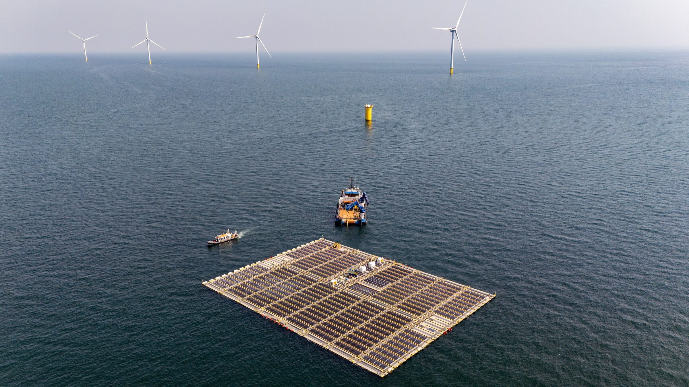
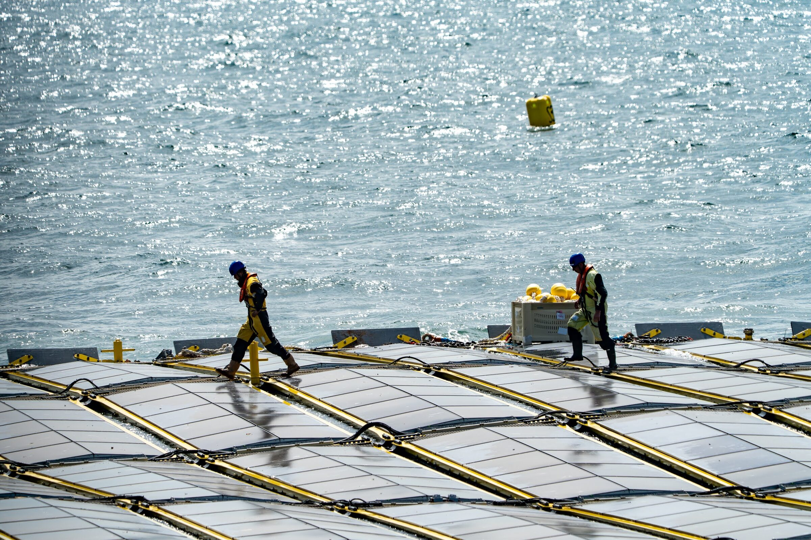

OFFSHORE SOLAR WITH OFFSHORE WIND
Co-location unlocks more MWh per sea area.
With our project inside an operating wind park, co-location unlocks more MWh per sea area using existing infrastructure and O&M.
More about our projects →For developers and operators who need more bankeable energy output from the same area, we deliver (floating) offshore solar you can build and operate now.
We design, build, install and operate offshore solar farm systems, co-located with and in offshore wind farms or stand-alone offshore and inshore, to produce clean, reliable and bankable power at sea.
Our multidisciplinary team delivers turnkey solutions from engineering and fabrication to EPCI, operations and consultancy, in harmony with nature.
Oceans of Energy has succeeded, as the first and only in the world, to develop an offshore solar system which has been proven to survive the high waves of the North Sea winter storms. For more than 4 years in a row the system withstood over 10 named storms as well as 365/24/7 wave action.
Our 'waterlily' technology and our 'learning from the reality' approach resulted in offshore solar farms able to provide clean electricity to the world at a large scale, keeping land space available for housing, recreation, industry, roads, and agriculture.
The future of solar-PV is at sea.

Almost half of the world's population lives within 100 kilometers from the coast. The oceans offer a lot of space, while only a fraction of that sea space covered by solar panels generates more energy than needed.
Our solar farms increase biodiversity, offer shelter to fish and a large variety of marine life who are using the protection of our 'waterlily' floating solar farms to flourish and procreate.

Our floating solar system combines modular floaters, engineered hydro-dynamic systems, and marine-grade solar PV systems. Arrays are assembled in port, towed to site, and connected to nearby infrastructure via a dynamic subsea export cable.
Our offshore solar system is water-surface supported, like a waterlily. Lightweight by design, it combines innovative standardized rigid and flexible elements so the farm rides the waves (in harmony with nature) instead of resisting them.
With our project inside an operating wind park, co-location unlocks more MWh per sea area using existing infrastructure and O&M.
More about our projects →
The same architecture scales to stand-alone sites, offshore or inshore/nearshore, for ports, coastal industry and islands with a grid connection. The system is also adaptable for remote or emergency power supply, such as supporting O&G platforms.
More on our technology →First-of-a-kind offshore solar farm installed within an offshore wind farm, 22 km off the Dutch coast. Clients: Shell and Eneco.

Offshore solar farm system deployed to test off the Belgian coast.

Operated from 2020 until 2024, 12 km offshore in the North Sea. The worldwide's first high-wave offshore solar farm system.
Installed in 2019 as the first offshore solar farm system in the world in the Dutch North Sea.
We fabricate and deliver standardized offshore / floating-solar components from our facility in Sassenheim, NL, and supply custom elements to fit project needs.
Full EPCI for renewable and infrastructure projects: engineering, procurement, construction and installation managed by our multidisciplinary team.
End-to-end or partial O&M support: AIM systems, preventive maintenance strategies, monitoring of infrastructure and energy assets.
With years of hands-on experience developing offshore solar systems in some of the world's most challenging marine environments, Oceans of Energy has built a unique multidisciplinary team. Our expertise spans engineering, structural dynamics, hydrodynamics, structural engineering, electrical systems (high and low voltage), design, fabrication, EPCI project management, asset integrity management, and much more.
Today, complementing our offshore solar development, we apply this knowledge to support a wide range of infrastructure and renewable energy projects. We offer consultancy services across all phases, from feasibility studies and permitting to subsidy applications and detailed engineering.
We care about the marine environment. It is our goal to bring abundant clean energy to the world using the vast space at sea without jeopardizing nature. Therefore, we invest substantially in environmental and ocean research, as part of our core business. Striving to minimize negative impact and maximize positive impacts. We believe in creating eco-synergies that can bring added value to local ecosystems and its people.
Environmental monitoring and research is incorporated in all our projects. Our Environment & Sustainability Team works closely with a network of researchers from top tier (independent) institutes. We test scientific hypotheses through numerical and physical modelling, field testing and continuous monitoring at each project. And we constantly improve our design and materials to be most eco-friendly.
Sustainability →